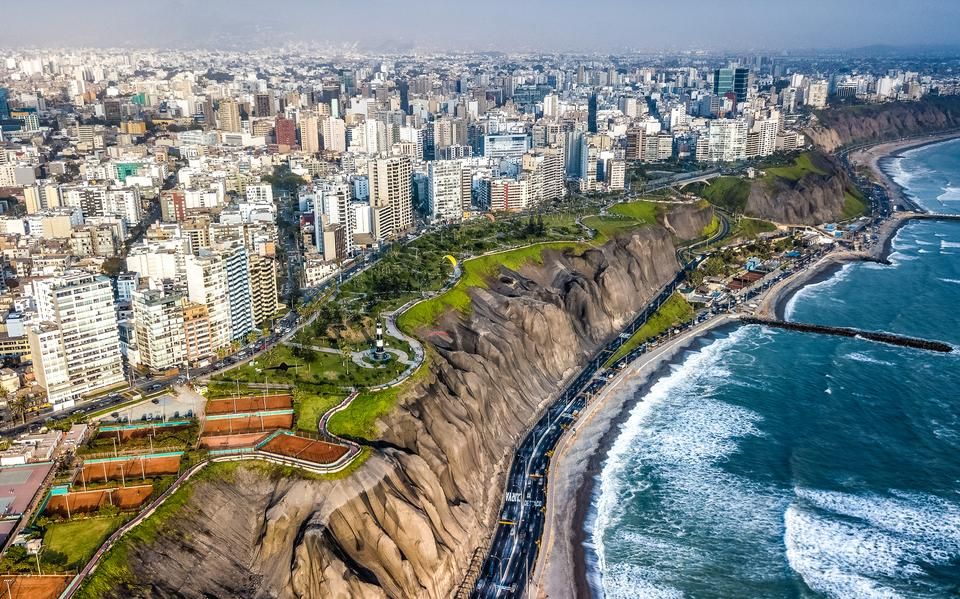
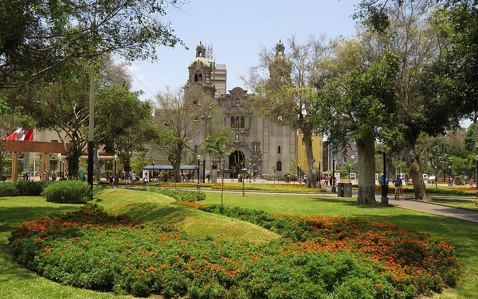

Na de lange vlucht vanuit Amsterdam worden Vicky, Toon en Marilou opgewacht bij de luchthaven van Lima door een medewerker van Naturandes Travel. Ze worden naar hun hotel in Miraflores gebracht — de mooiste wijk van Lima, direct aan de kliffen boven de Stille Oceaan.
Afhankelijk van de aankomsttijd is er tijd voor een eerste verkenning: de boulevard langs de kliffen, de levendige Parque Kennedy, of gewoon uitrusten na de lange vlucht.


Om 08:45 worden jullie opgehaald voor de busrit met Cruz del Sur — Peru's meest betrouwbare busmaatschappij. De bus vertrekt om 09:30 en rijdt 8,5 uur door een landschap dat langzaam verandert van kust naar hooggebergte. Aankomst in Huaraz (3.050m) rond 18:00.
Huaraz is de poort naar de Cordillera Blanca — 's werelds hoogste tropische bergketen, met 722 gletsjers en 882 meren in Nationaal Park Huascarán.


Met een privéchauffeur naar Laguna Wilcacocha op 3.700 meter — één van de mooiste uitzichtpunten van de regio. De wandeling heen en terug duurt 3 uur langs traditionele bergdorpjes en lokale vegetatie. Het meer biedt een spectaculair panorama op de besneeuwde toppen van de Cordillera Blanca, weerspiegeld in het wateroppervlak.


Naar Laguna Churup op 4.450 meter — bekend om haar intens turquoizen water omringd door steile rotswanden. De wandeling (4–5 uur heen en terug) kent een avontuurlijk moment: op een bepaald punt gebruik je een vaste kabel om jezelf omhoog te hijsen langs de rotswand.


Om 08:00 vertrekt de groep vanuit Huaraz. Via het dorp Chiquián, valleien met cactussen en struikgewas wordt kampeerplaats Rondoy (4.200m) bereikt — met de eerste indrukwekkende zichten op de Cordillera Huayhuash. Vandaag geen steile klimmen: een rustige acclimatisatiedag voor wat morgen komt.


De zwaarste maar meest spectaculaire dag! Een lange klim naar de Rondoy-pas op 4.750 meter met panoramisch zicht op Yerupajá (6.634m) en zijn imposante westwand van 1.100 meter hoog. De afdaling voert langs het melkblauwe gletsjermeer Solteracocha naar de schitterende Laguna Jahuacocha (4.150m).


Een rust- en keuzevrijdag aan de oevers van Laguna Jahuacocha. Keuze uit een dagwandeling naar de Yaucha-pas (4.847m), een tocht naar het gletsjermeer Rasaccocha, of gewoon ontspannen. Forel vissen kan ook — en met geluk haal je een koud biertje aan de boerderij achter het kamp. 🎣🍺

Na een vroege start en een laatste blik op Jahuacocha beginnen jullie aan de terugweg. Via de Pampa Llamac (4.300m) — met een laatste panorama over de hele Cordillera Huayhuash — daalt de groep af naar het dorp Llamac waar de bus klaarstaat. Aankomst Huaraz ~17:00. Welverdiende warme douche! 🚿

Om 10:45 vertrekken Vicky, Toon en Marilou naar de luchthaven van Anta voor de LATAM-vlucht naar Lima (13:10–14:10). In Lima worden ze opgewacht door... Amelie, Rik en Keanu!
🎊 Vanaf vandaag zijn jullie met z'n zessen! De rest van de reis trekken alle zes samen verder door Peru.